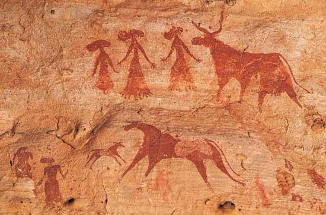
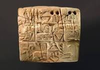
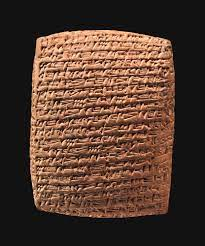

WHAT IS MEDIA?
Media is described as channel or ways we use to transmit or deliver an information and data. Media also act as channels of information and knowledge through which citizens communicate with each other and make informed decisions, Media can be traditional and can be modernize media which we call New Media. Traditional Media are those that transmit information without the use of the internet or any digital platform (i.e. analog technology like airwaves, the Television, Radio, News Paper, and others). New Media on the other hand, are those that transmit information by the use of internet (i.e. Social media platform, you named it).
“HUMANS ARE SOCIAL
BEINGS WHO WANT
AND NEED TO COMMUNICATE
WITH EACH OTHER,
EVEN INFANTS TRY TO COMMUNICATE
WITH THEIR CAREGIVERS
USING NON-VERBAL CUES.”

Dr. Kathryn Barnard
Before Common Era to Common Era timeline
_____________
IMPORTANT INFO!
THE HISTORICAL EVENTS IS DIVIDED INTO 4 AGES:
PRE-INDUSTRIAL AGE
IT WAS BEFORE AND DURING YEAR 1700'S PEOPLE HAD LEARNED OR DISCOVERED FIRE AND DEVELOPED A PAPER FROM PLANTS, AND FORGED WEAPONS WITH STONE, BRONZE, COPPER, AND IRON.
INDUSTRIAL AGE
IN YEAR 1700'S TO 1930'S PEOPLE USED THE POWER OF STEAM, DEVELOPED MACHINE TOOLS, ESTABLISHED IRON, PRODUCTION, AND THE MANUFACTURING OF VARIOUS PRODUCTS.
ELECTRONICAL AGE
AFTER 1930'S TO 1980'S THE INVENTION OF THE TRANSISTOR USHERED IN THE ELECTRONIC AGE. PEOPLE HARNESSED THE POWER OF TRANSISTORS.INFORMATION AGE
FINALLY IN 20-21ST CENTURY THE INTERNET PAVE THE WAY FOR FASTER COMMUNICATION AND THE CREATION OF THE WORK OF THE SOCIAL NETWORK.
PRE-INDUSTRIAL AGE
Humans started writing around 3200 BCE or Before Common Era. It arose from the need to indicate quantity or numbers for recordkeeping. To record other things and concepts, Therefore early humans decide to began drawing and carving on stones, caves and animal skins. CAVE PAINTINGS, PICTOGRAPHS AND PETROGLYPES WAS DISCOVERED AND DEVELOPED DURING THE YEAR (3500 BCE).
 